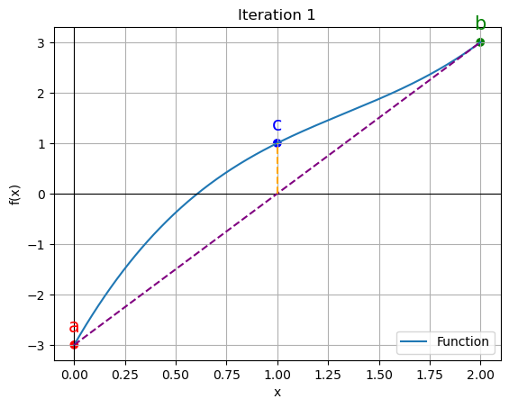
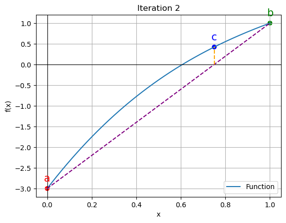
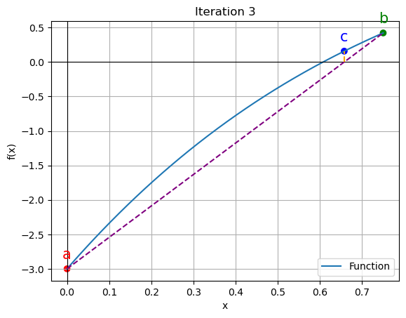
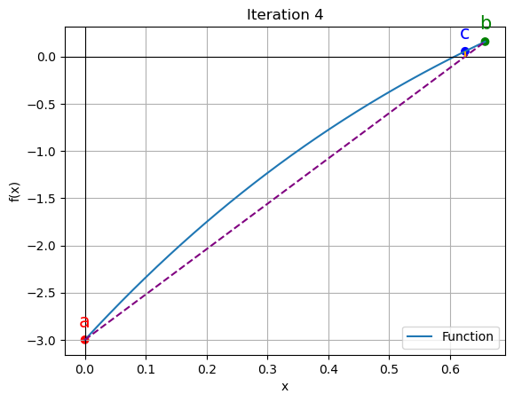
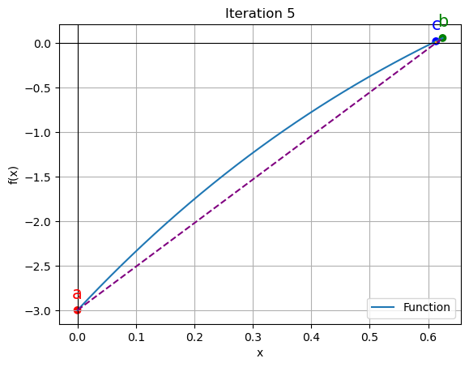

import matplotlib.pyplot as plt
import numpy as npFalse Position Method
It is also one of the Numerical Methods to find the approximate root of the function
Algorithm Steps:
- Choose an interval [a, b] where the function changes sign\[ {f(a) \times f(b) < 0}\] - Calculate the x-coordinate of the new point c on the x-axis: \[ c = b - \frac{f(b) \times (a - b)}{f(a) - f(b)} = \frac{a \times f(b) - b \times f(a)}{f(b) - f(a)} \] - Evaluate the function at c, f(c). - If f(c) is very close to zero or if the interval width is smaller than a specified tolerance, return c as the root. - Determine which subinterval ([a, c] or [c, b]) has a sign change and adjust a or b accordingly. - Repeat steps 2-5 until the interval width is smaller than the tolerance.
Import Libraries
Function to find the approx root
def method(func, a, b, tol=1e-6, max_iter=100):
if func(a) * func(b) >= 0:
raise ValueError(
"Function must have opposite signs at interval endpoints.")
iter_count = 1
prev_root = 0
iteration_data = []
print("Iteration | a | b | c | Ea (%) | Et (%)")
print("---------------------------------------------------------")
f_c=np.inf
while abs(f_c) > tol and iter_count < max_iter:
c = (a * func(b) - b * func(a)) / (func(b) - func(a))
f_c=func(c)
Ea = abs((c - prev_root) / c) * 100
iteration_data.append((iter_count, a, b, c, func(a), func(b), func(c)))
Et = abs(func(c)) * 100
print(f"{iter_count:9d} | {a:.4f} | {b:.4f} | {c:.4f} | {Ea:.6f} | {Et:.6f}")
if func(c) == 0:
return c
elif func(c) * func(a) < 0:
b = c
else:
a = c
prev_root = c
iter_count += 1
return c, iteration_dataDefining the Fxn
def function(x):
return x**3 - 4*x**2 + 7*x - 3Initializing the variables
a = 0.0
b = 2.0
tolerance = 1e-6FInding the approx value
root, iteration_data = method(function, a, b, tol=tolerance)
print("")
print("Approximate root:", root)
print("Function value at root:", function(root))Iteration | a | b | c | Ea (%) | Et (%)
---------------------------------------------------------
1 | 0.0000 | 2.0000 | 1.0000 | 100.000000 | 100.000000
2 | 0.0000 | 1.0000 | 0.7500 | 33.333333 | 42.187500
3 | 0.0000 | 0.7500 | 0.6575 | 14.062500 | 15.762036
4 | 0.0000 | 0.6575 | 0.6247 | 5.254012 | 5.572635
5 | 0.0000 | 0.6247 | 0.6133 | 1.857545 | 1.929884
6 | 0.0000 | 0.6133 | 0.6094 | 0.643295 | 0.663488
7 | 0.0000 | 0.6094 | 0.6081 | 0.221163 | 0.227530
8 | 0.0000 | 0.6081 | 0.6076 | 0.075843 | 0.077959
9 | 0.0000 | 0.6076 | 0.6074 | 0.025986 | 0.026703
10 | 0.0000 | 0.6074 | 0.6074 | 0.008901 | 0.009146
11 | 0.0000 | 0.6074 | 0.6074 | 0.003049 | 0.003132
12 | 0.0000 | 0.6074 | 0.6074 | 0.001044 | 0.001073
13 | 0.0000 | 0.6074 | 0.6074 | 0.000358 | 0.000367
14 | 0.0000 | 0.6074 | 0.6074 | 0.000122 | 0.000126
15 | 0.0000 | 0.6074 | 0.6074 | 0.000042 | 0.000043
Approximate root: 0.6073533509777344
Function value at root: 4.309203518459981e-07Plotting the values
for data in iteration_data[:5]:
iter_count, a, b, c, f_a, f_b, f_c = data
plt.figure()
x_vals = np.linspace(a, b, 400)
y_vals = function(x_vals)
plt.plot(x_vals, y_vals, label='Function')
plt.scatter([a, b, c], [function(a), function(b), function(c)], color=['red', 'green', 'blue'])
plt.annotate('a', (a, function(a)), textcoords="offset points", xytext=(0,10), ha='center', fontsize=15, color='red')
plt.annotate('b', (b, function(b)), textcoords="offset points", xytext=(0,10), ha='center', fontsize=15, color='green')
plt.annotate('c', (c, function(c)), textcoords="offset points", xytext=(0,10), ha='center', fontsize=15, color='blue')
plt.axhline(y=0, color='black', linewidth=0.8)
plt.axvline(x=0, color='black', linewidth=0.8)
# Calculate the x-coordinate of the intersection point
intersection_x = a - (a - b) * function(a) / (function(a) - function(b))
plt.plot([a, b], [function(a), function(b)], color='purple', linestyle='--')
# Draw a line connecting the intersection point to c
plt.plot([intersection_x, c], [0, function(c)], color='orange', linestyle='--')
plt.xlabel('x')
plt.ylabel('f(x)')
plt.legend()
plt.grid()
plt.title(f"Iteration {iter_count}")
plt.show()



